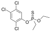

trichloronate

Definition: Trichloronate is a highly toxic organophosphate insecticide. It is used against vegetable fly larvae and soil pests.Case reports indicate exposure to the chemical can cause fatal encephalopathy. Its aquatic toxicity has been measured at significantly higher against Ceriodaphnia dubia and Daphnia magna.
Source: Wikipedia
Wikipedia Page
Wikidata Page